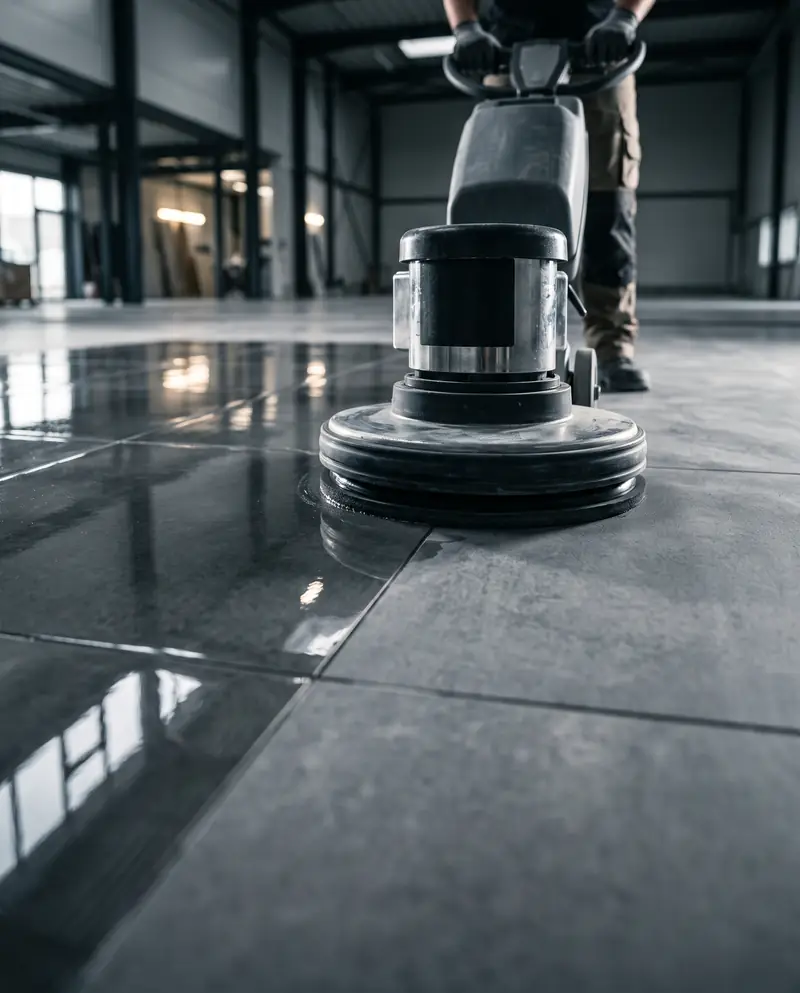

דירה נקייה.
רצפה שמבריקה.
ניקיון דירות ומשרדים לפני אכלוס, פוליש קריסטל, פוליש לגרניט פורצלן וחידוש רצפות – ללקוחות פרטיים ולעסקים.

ניקיון לפני אכלוס
דירה חדשה מקבלן או משרד אחרי שיפוץ נשארים עם אבק בנייה, כתמי צבע ושאריות דבק בכל פינה. אנחנו מנקים את הנכס מהתקרה עד הרצפה, כך שאפשר להכניס רהיטים באותו יום.
לתיאום ניקיון| מטבח | ארונות מבפנים ומבחוץ, משטחים, כיור וברזים |
|---|---|
| חדרי רחצה | קירות וריצוף, כלים סניטריים, מקלחון ואביזרים |
| חלונות | זכוכיות, מסגרות, מסילות ותריסים |
| רצפות | הסרת שאריות צבע, טיח ודבק, ושטיפה יסודית |
| ארונות קיר | מדפים, מגירות ודלתות |
| בכל החדרים | אבק מנקודות גבוהות, שקעים, מפסקים, דלתות ומשקופים |
פוליש וחידוש רצפות
רצפה עמומה, שרוטה או מוכתמת לא תמיד צריכה החלפה. כל חומר מקבל טיפול משלו:
- שיש ואבן טבעית
- פוליש קריסטל – ברק עמוק ושכבת הגנה
- גרניט פורצלן
- ליטוש וחומרים ייעודיים להסרת עמעום וכתמים
- רצפה שחוקה
- חידוש בשלבים, בלי לפרק ובלי להחליף
לבית
- ניקיון דירה חדשה לפני כניסה
- ניקיון אחרי שיפוץ או לפני מעבר
- פוליש וחידוש רצפות שיש וגרניט פורצלן
- ניקיון כללי ויסודי לכל הבית
לעסק
- ניקיון משרדים לפני אכלוס או אחרי שיפוץ
- פוליש רצפות בלובי, בחנויות ובמבני מסחר
- עבודה בשעות שלא מפריעות לפעילות
- חשבונית מסודרת והתקשרות קבועה
איך מתחילים
- פונים אלינובטלפון, בוואטסאפ או בטופס למטה
- מקבלים הצעת מחירלפי גודל הנכס, מצבו וסוג הרצפה
- קובעים מועדביום ובשעה שנוחים לכם
- נכנסים לנכס מוכןעוברים יחד על העבודה בסיום
שאלות שחוזרות
מה ההבדל בין פוליש קריסטל לפוליש גרניט פורצלן?
פוליש קריסטל מיועד לשיש ולאבן טבעית: הוא סוגר נקבוביות ומעניק ברק עמוק. גרניט פורצלן קשה יותר ומקבל ליטוש וחומרים אחרים. נגיד לכם מה מתאים אחרי שנראה את הרצפה.
אפשר לחדש רצפה בלי להחליף אותה?
ברוב המקרים כן. ליטוש מקצועי מסיר שריטות, כתמים ועמעום, בעלות נמוכה בהרבה מהחלפה.
כמה זה עולה?
תלוי בגודל הנכס, במצבו ובסוג השירות. התקשרו או שלחו תמונות בוואטסאפ ותקבלו הצעת מחיר.
אתם עובדים גם עם עסקים?
כן – משרדים, חנויות ומבני מסחר, בעבודה חד פעמית או בהתקשרות קבועה.